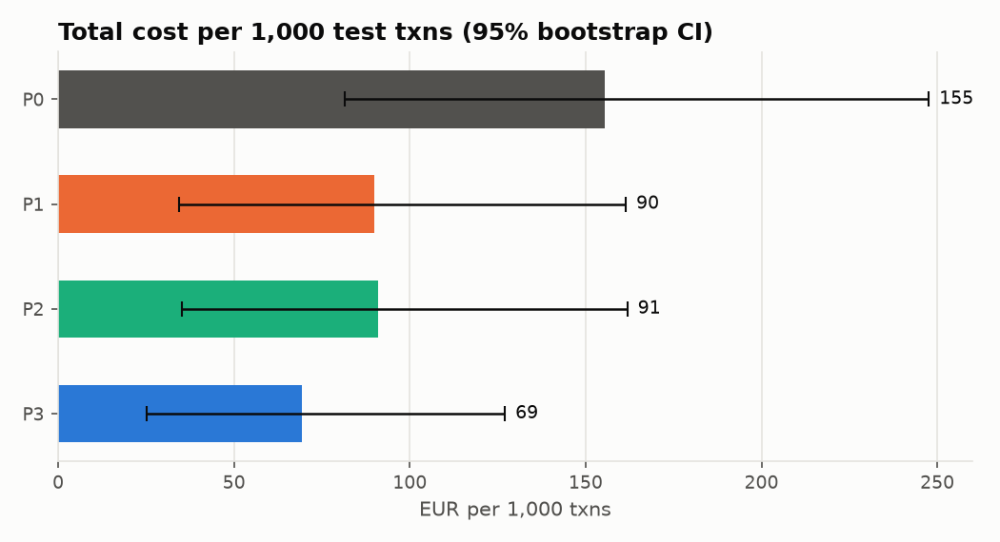

Code: github.com/Saminay786/transaction-risk-decision-framework · Status: in progress
What this project is about
Banks score every card transaction for fraud risk. But a score doesn’t stop fraud by itself. Someone still has to decide: approve the payment, send it to an analyst to review, or decline it.
This project builds that decision step. It combines the fraud probability, the transaction amount and the cost of each possible mistake, then picks the cheapest action for each transaction, without exceeding the number of reviews analysts can handle.
What to expect: a simple example of why a score isn’t enough, how each action is priced, four ways of deciding compared on unseen data, and how much we can trust the result.
How this differs from my IIT Madras project
I first worked on this problem in a coursework project at IIT Madras: Credit Default and Fraud Risk Prediction (American Express – IIT Madras, 2022). I cleaned the data, balanced the classes with SMOTE-Tomek, and compared seven models. XGBoost did best on ROC-AUC and F1.
That project asked “how risky is this case?” This one asks what a risk team needs next: “what do we do about it, and what will it cost?”
| IIT Madras coursework | This project | |
|---|---|---|
| Output | A risk score | Approve, review or decline |
| Rare fraud cases | Oversampled | Left as they are, so probabilities stay realistic |
| Testing | Random splits | Train on the past, test on a later period |
| Judged by | ROC-AUC, F1 | € cost, fraud caught, customers affected |
Two transactions, same score
A €3 coffee and a €900 laptop both get a 10% fraud score. The common rule, “decline if the score is above 0.5”, approves both.
But if the laptop is fraud, the bank loses €900 plus fees. An analyst check costs about €5, which is clearly worth it for the laptop and not for the coffee. Same score, different right answer.
How it works
Data. The public ULB credit-card dataset: 284,807 European card transactions over two days, 492 of them fraud (0.17%).
Model. LightGBM, trained on the first 60% of the timeline and tested on the last 20%, as it would be used in real life. Unlike my coursework project, I didn’t oversample fraud. Oversampling inflates the scores, so a “10%” stops meaning 10%. Here the probability feeds a € calculation, so it has to be honest.
Pricing each action. With p = fraud probability and A = amount:
approve = p × (A + fees)
review = analyst cost + p × (share analysts miss) × (A + fees) + (1 − p) × customer delay
decline = (1 − p) × (lost margin + cost of an annoyed customer)For the laptop: €92 to approve, €15 to review, €33 to decline, so it goes to review. For the coffee: €1.80 to approve, so it goes through. The cost inputs (€5 per review, 90% of fraud caught on review, and so on) are assumptions that a real bank’s Finance team would supply.
Four ways of deciding:
- P0: approve everything (the cost of doing nothing)
- P1: decline if p > 0.5 (the common default)
- P2: two cut-offs, tuned on past data
- P3: the cheapest action per transaction, within a review cap of 1%
Results

| P1: decline if p > 0.5 | P3: cheapest action | |
|---|---|---|
| Cost per 1,000 transactions | €89.8 | €69.4 |
| Share of fraud € stopped | 49% | 68% |
| Analyst reviews used | 0 | 33 (of 569 allowed) |
P3 wins by doing exactly what the laptop example suggests: it spends a few reviews on risky, expensive transactions that the 0.5 rule lets through.
How sure are we? The test period has only 75 frauds, so I resampled it 1,000 times. P3 beats approving everything in 99.7% of resamples, and beats the 0.5 rule in 85%. The second gain is promising but not proven: its 95% range is −€352 to €3,493. I’d use it to justify a pilot, not to promise savings.
A surprise. P2, the tuned cut-offs, did slightly worse than the plain 0.5 rule. It was tuned on just 33 frauds, so it mostly fitted noise. P3 has nothing to tune, which helps when fraud examples are scarce.
If analysts cost more? Raising the review cost from €1 to €20, P3 uses fewer reviews (133 down to 4), and its cost stays around €67–70 per 1,000, against €90 for the 0.5 rule.
Is this new?
No, not as an idea. Making decisions by expected cost is well established, and this project applies it rather than inventing it:
- Cost-based thresholds: Elkan, The Foundations of Cost-Sensitive Learning (IJCAI 2001).
- Cost-based fraud decisions, per transaction: Correa Bahnsen et al., Cost Sensitive Credit Card Fraud Detection Using Bayes Minimum Risk (ICMLA 2013), and their later work on example-dependent costs.
- A “review” option beside yes/no: the reject option, formalised by Chow (1957, 1970).
- Resampling distorts probabilities: Dal Pozzolo et al., Calibrating Probability with Undersampling for Unbalanced Classification (IEEE SSCI 2015). This is from the same ULB group that released the dataset.
- Limited analyst capacity in fraud: Dal Pozzolo et al., Credit Card Fraud Detection: A Realistic Modeling and a Novel Learning Strategy (IEEE TNNLS 2018).
What this project adds is small and practical: it puts these pieces into one end-to-end pipeline, with three actions, amount-based costs, a review cap and a test on a later time period. It also reports how uncertain the gain is, which most public work on this dataset skips, and shows that tuned cut-offs can fail when fraud examples are few.
Limitations and next steps
The costs are assumptions, there are few frauds, and the data covers only two days with no customer IDs. Next, I’d move the same decision layer to the larger IEEE-CIS dataset, keep each customer in only one of training or testing, and simulate chargebacks arriving weeks later, as they do in practice.
The takeaway: a fraud model’s job is to estimate risk. Deciding what to do with that risk is a separate job, and it’s where most of the money is.
Full details, formulas and a one-page decision memo are in the GitHub repo.